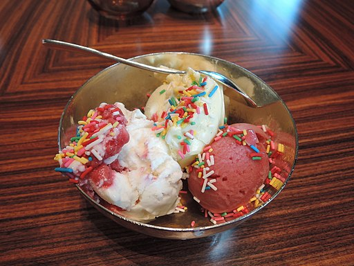

Ice Cream

Description
Custard-style ice cream starts with a cooked base enriched with egg yolks, sugar, and cream. This style of ice cream has the smoothest, creamiest, richest texture and flavor
Ingredients
- 8 egg yolks
- 1 cup granulated sugar, divided
- 1 cup heavy cream
- 3 cups half-and-half
- Pinch salt
- 1 tablespoon vanilla extract (optional)
Steps
- In a medium bowl, whisk together the egg yolks and half of the sugar. Set aside.
- In a medium saucepan, stir together the cream, half-and-half, salt, and remaining sugar. Heat the mixture over medium-high heat, stirring often, until it comes to a simmer, then reduce heat to medium.
- Add about 1/2 cup of the cream mixture to the egg mixture while whisking constantly (this helps prevent the eggs from cooking). Repeat with another 1/2 cup of the cream mixture.
- Using a heatproof spatula, stir the cream mixture in the saucepan constantly as you pour the egg mixture into the pan.
- Cook, stirring constantly, until thickened and mixture coats the back of the spatula, 1 to 2 minutes longer. Remove from heat.
- Strain the mixture through a fine-mesh sieve into a clean bowl and whisk in the vanilla extract. Set the bowl in an ice bath and stir the base occasionally until it's cooled to room temperature. Remove the bowl from the ice bath, cover with plastic wrap, and refrigerate at least 2 to 4 hours or overnight before churning, either in an ice cream machine or by hand (see below for tips on how to churn ice cream).